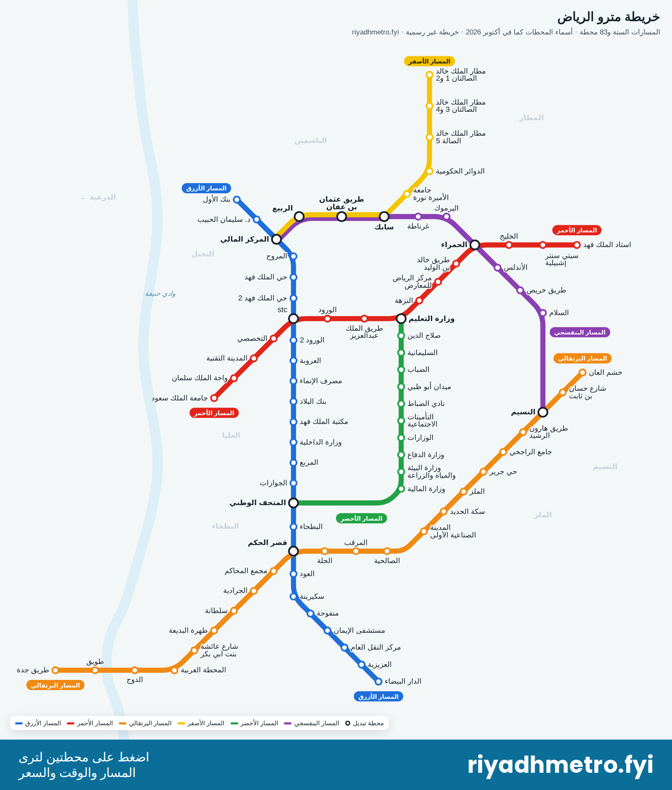

خريطة مترو الرياض › المسارات
مسارات مترو الرياض: الخطوط الستة ومحطاتها
يضم مترو الرياض ستة مسارات (خطوط) و83 محطة. لكل مسار لون ورقم، ويبيّن الجدول من أين يبدأ كل مسار وأين ينتهي وعدد محطاته ومحطات التبديل إلى المسارات الأخرى.
افتح الخريطة التفاعلية
المسارات الستة في جدول واحد
| المسار | من – إلى | المحطات | التبديل إلى مسارات أخرى |
|---|---|---|---|
| ● المسار الأزرق (المسار 1) | بنك الأول – الدار البيضاء | 25 | المركز المالي، stc، المتحف الوطني، قصر الحكم |
| ● المسار الأحمر (المسار 2) | جامعة الملك سعود – استاد الملك فهد | 15 | stc، وزارة التعليم، الحمراء |
| ● المسار البرتقالي (المسار 3) | طريق جدة – خشم العان | 22 | قصر الحكم، النسيم |
| ● المسار الأصفر (المسار 4) | المركز المالي – مطار الملك خالد - الصالتان 1 و2 | 9 | المركز المالي، الربيع، طريق عثمان بن عفان، سابك |
| ● المسار الأخضر (المسار 5) | وزارة التعليم – المتحف الوطني | 12 | وزارة التعليم، المتحف الوطني |
| ● المسار البنفسجي (المسار 6) | المركز المالي – النسيم | 11 | المركز المالي، الربيع، طريق عثمان بن عفان، سابك، الحمراء، النسيم |
يشترك المساران الأصفر والبنفسجي في المحطات الأربع من المركز المالي إلى سابك. تذكرة الساعتين تكفي لعدد غير محدود من الرحلات والتبديل بين المسارات.